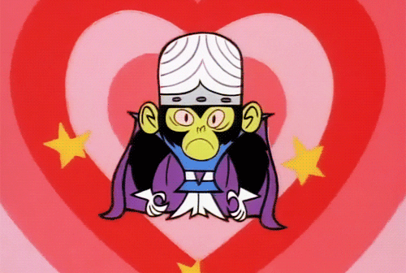

Welcome to Mojo!
Your daily mood journal
Introspection is a key component for mental health and well-being. Whether it is reflecting on your week or realizing that it is time to reach out and ask for help, MoJo is here for you. Mojo is all about you. We do not profit off of, nor do we share your information.
Take time for yourself. Spend time in daily introspection with MoJo and get the space you need to be the best you.
Click on the About me tab to learn more of what Mojo is all about!
How to use MoJo:
Navigate to your journal by selecting the Journal tab above.
Select the day.
Use our handy Mood key to select your mood.
Add a journal entry to reflect on your day.